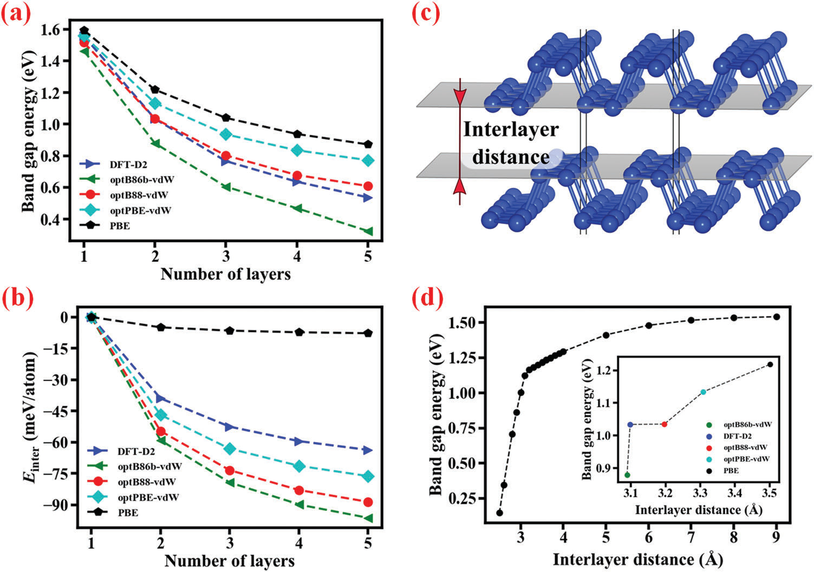
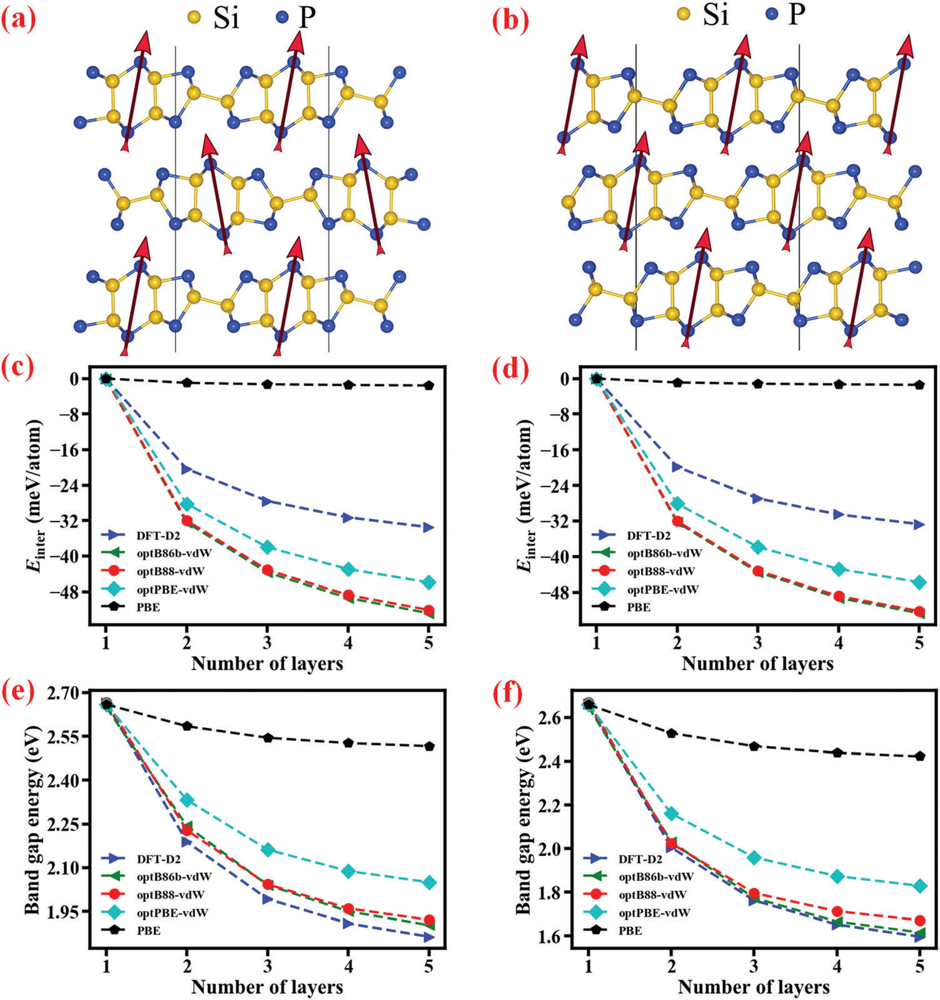
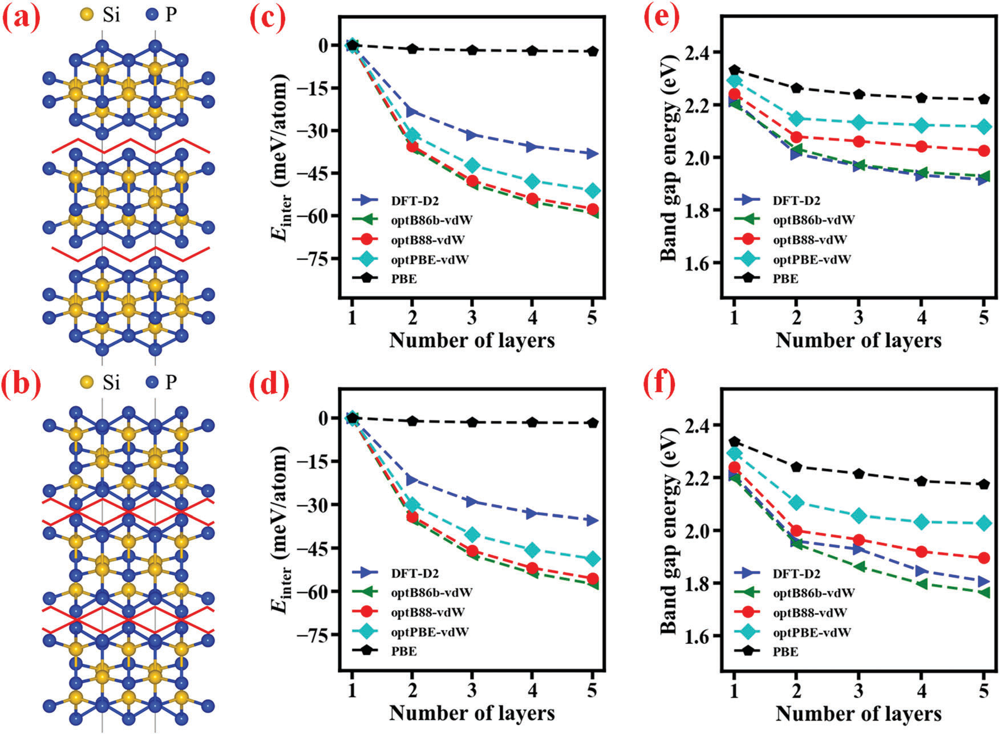
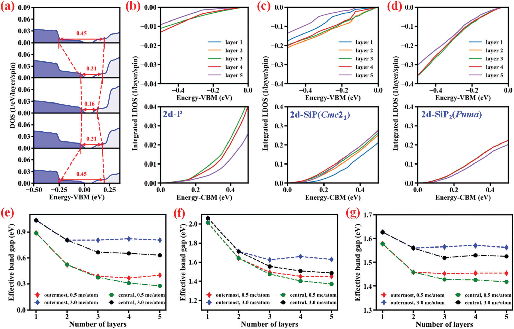

Rekayasa Sifat Elektronik Phosphorene Multilapis melalui Silikonisasi: Menjinakkan Ketergantungan Ketebalan untuk Semikonduktor 2D Generasi Baru
Bagaimana reaksi silikonisasi terhadap fosforen multilapis mentransformasikan kerapuhan celah pita akibat variasi ketebalan menjadi material dua dimensi SiP dan SiP₂ yang stabil, mempertahankan celah pita semikonduktor lebar, dan mengungkap mekanisme transportasi elektron terisolasi di lapisan inti.
01. Dilema Ketebalan Fosforen & Hambatan Skalabilitas Skala Nano
Sejak berhasil dieksfoliasi secara mekanis dari kristal ruah fosfor hitam pada tahun 2014, fosforen (2d-P) telah memikat perhatian komunitas fisika zat padat dan nanoteknologi dunia. Tidak seperti grafena yang tidak memiliki celah pita energi, fosforen merupakan semikonduktor dengan celah pita langsung yang lebar, mobilitas pembawa muatan tinggi (mencapai ~1000 cm²·V⁻¹·s⁻¹), serta anisotropi termal dan optik yang sangat mencolok akibat struktur kisi kristalnya yang bergelombang.
Karakteristik ini menjadikan fosforen kandidat idaman untuk transistor efek medan (FET), sensor gas ultra-sensitif, elektroda baterai ion logam, hingga fotodetektor inframerah. Namun, ada satu batu sandungan fisik yang sangat berat dalam penerapannya di dunia nyata: ketergantungan celah pita yang terlampau curam terhadap ketebalan lapisan.
Perhitungan fungsional hibrida menunjukkan bahwa celah pita fosforen berkurang secara drastis saat jumlah lapisan bertambah. Pada lembaran tunggal, celah pitanya bernilai `1.52 eV`. Begitu dua lembaran menumpuk menjadi dua lapis (bilayer), celah pita langsung anjlok menjadi `1.02 eV`—kehilangan setengah elektron-volt hanya karena penambahan satu lapis atom. Penurunan ini terus berlanjut hingga menyentuh nilai fasa ruah sebesar `0.38–0.39 eV`.
Dalam sintesis material dua dimensi di laboratorium maupun industri, mengontrol ketebalan lembaran atom secara presisi merupakan tantangan eksperimental yang luar biasa berat:
1. Metode Eksfoliasi Mekanis dan Cair: Cenderung menghasilkan campuran serpihan dengan ketebalan yang sangat bervariasi, mulai dari 1 hingga puluhan lapis atom, di mana serpihan lapis tunggal murni sangat langka dan sulit dipisahkan.
2. Deposisi Uap Kimiawi (CVD) dan Tekanan Tinggi: Pertumbuhan langsung fosfor hitam dari fosfor merah umumnya menghasilkan film polikristalin tebal berukuran 40–200 nm, bukan lembaran tunggal homogen.
3. Variabilitas Kinerja Piranti: Akibat celah pita fosforen yang anjlok dari `1.52 eV` ke `0.38 eV` seiring bertambahnya lapisan, fluktuasi ketebalan antarsampel menyebabkan tegangan ambang, arus gelap, dan respons optik piranti nano menjadi tidak konsisten.
4. Ketiadaan Semikonduktor Celah Lebar Tebal: Untuk aplikasi optoelektronika atau transistor daya yang memerlukan lapisan aktif fisik yang cukup tebal (agar absorpsi cahaya optimal atau tahan arus tinggi) namun tetap mempertahankan celah pita lebar, fosforen murni sama sekali tidak dapat digunakan.
Upaya sebelumnya untuk merekayasa celah pita material 2D mencakup penerapan medan listrik eksternal tegak lurus, induksi regangan mekanis, interkalasi ion logam, maupun penataan susunan tumpukan antarlapisan. Namun, metode-metode tersebut sering kali sulit diterapkan secara stabil dalam skala fabrikasi nano.
Dalam studi ini, tim peneliti gabungan dari University of Oslo dan Singapore University of Technology and Design (SUTD) mengusulkan strategi inovatif: memanfaatkan reaktivitas kimiawi fosforen untuk membentuk senyawa biner silikon fosfida 2D (2d-SiP dan 2d-SiP₂). Melalui silikonisasi terkontrol, interaksi antarlapisan dapat diatur secara elegan, meredam ketergantungan ketebalan secara radikal sekaligus mempertahankan celah pita semikonduktor yang lebar.
02. Fisika Interaksi Antarlapisan (vdW) & Sensitivitas Fungsional DFT
Untuk memahami bagaimana silikonisasi dapat menstabilkan celah pita, penting untuk mengupas mekanisme fisika dari ketergantungan ketebalan pada fosforen murni (2d-P). Penurunan celah pita saat lapisan menumpuk terjadi akibat tumpang tindih dan hibridisasi orbital `p_z` fosfor antarlapisan yang disatukan oleh gaya tarik van der Waals (vdW). Hibridisasi ini memicu pelebaran pita energi: pita valensi maksimum (VBM) terdorong ke atas sementara pita konduksi minimum (CBM) terdorong ke bawah.

Namun, perhitungan mekanika kuantum ab initio berbasis DFT pada material berlapis sangat sensitif terhadap fungsional pertukaran-korelasi (XC) yang dipilih, khususnya dalam memperhitungkan interaksi dispersi van der Waals non-lokal:
- Kegagalan Aproksimasi Gradien Tergeneralisasi (PBE): Fungsional standar PBE tidak memperhitungkan korelasi dispersi jarak jauh. Akibatnya, PBE sangat meremehkan interaksi antarlapis fosforen, menghasilkan energi ikat antarlapisan semu yang sangat lemah (`E_inter = -5 meV/atom`) dan jarak ekuilibrium antarlapis yang terlalu renggang (`3.50 Å`).
- Keunggulan Fungsional Koreksi Dispersi (vdW-DF & DFT-D2): Fungsional seperti `optB86b-vdW`, `optB88-vdW`, dan `DFT-D2` menangkap gaya tarik dispersi non-lokal secara akurat. Untuk bilayer fosforen, `optB86b-vdW` memprediksi jarak antarlapis yang rapat (`3.09 Å`) dengan energi interaksi yang kuat (`E_inter = -59 meV/atom`), yang sangat selaras dengan data difraksi sinar-X kristal ruah eksperimental.
- Korelasi Monotonik Jarak-Celah Pita: Sebagaimana diperlihatkan pada Gambar 1d, saat dua lembaran fosforen ditarik menjauh secara artifisial dari jarak `3.0 Å` ke `8.0 Å`, celah pita HSE meningkat secara monotonik hingga mencapai batas celah pita lembaran tunggal terisolasi (`1.52 eV`).
- Pengaruh Relaksasi Dalam-Bidang: Di samping jarak antarlapis, variasi fungsional XC juga memicu perbedaan konstanta kisi dalam-bidang sepanjang arah armchair hingga 3% (meskipun panjang ikatan kovalen P-P rata-rata tetap konstan pada `2.24 ± 0.01 Å`). Regangan kisi dalam-bidang ini turut menggeser celah pita lembaran tunggal antara `1.46 eV` (optB86b) hingga `1.59 eV` (PBE).
Temuan ini membuktikan bahwa interaksi antarlapisan adalah tuas pengendali utama dari celah pita fosforen. Oleh karena itu, jika kita dapat memodifikasi struktur kisi dan kimia antarmuka lembaran melalui penambahan atom asing yang stabil—seperti silikon—maka interaksi antarlapis dan ketergantungan ketebalannya dapat dijinakkan secara terukur.
03. Konsep Silikonisasi: Kelahiran Semikonduktor 2D SiP & SiP₂
Melalui penapisan basis data material komputasi Materials Project, sistem biner silikon-fosfor (Si-P) muncul sebagai kandidat paling menjanjikan. Kristal ruah SiP dan SiP₂ telah terbukti dapat disintesis di laboratorium melalui metode transpor uap kimiawi maupun kristalisasi fluks timah cair dengan mineralisator magnesium atau gadolinium.
Dalam bentuk dua dimensi, senyawa 2d-SiP dan 2d-SiP₂ mempertahankan struktur bergelombang khas fosforen, namun kerangka atomnya diperkokoh oleh kombinasi ikatan kovalen Si–Si dan ikatan kovalen polar Si–P.
| Material 2D | Stoikiometri Atom | Muatan Bader Efektif | Kalor Pembentukan PBE (`eV/atom`) | Energi Antarlapis `E_inter` (`meV/atom`) | Sifat Ikatan Dominan |
|---|---|---|---|---|---|
| Fosforen (2d-P) | P | 0.00e | 0.00 (Fase Acuan) | -59 s/d -80 | Kovalen homonuklir P-P |
| 2d-SiP (Ortorombik / Monoklinik) | Si : P = 1 : 1 | Si: +1.14e | P: -1.14e | -0.17 (Eksotermik) | -30 s/d -45 | Kovalen Si-Si & polar Si-P |
| 2d-SiP₂ (Pnma / Pbam) | Si : P = 1 : 2 | Si: +1.52e | P: -0.76e | -0.14 s/d -0.16 | -35 s/d -55 | Jejaring tetrahedral polar Si-P |
Analisis muatan partisi Bader mengonfirmasi adanya transfer muatan yang signifikan dari silikon ke fosfor. Pada monolayer 2d-SiP, atom Si kehilangan `1.14 elektron` yang ditransfer ke atom P (`+1.14e` pada Si dan `-1.14e` pada P). Pada monolayer 2d-SiP₂, setiap atom silikon mendonasikan `1.52 elektron` yang didistribusikan merata ke dua atom fosfor sekitarnya (`-0.76e` per atom P).
Polarisasi muatan parsial ini memberikan stabilitas termodinamika yang kokoh. Kalor pembentukan PBE lembaran tunggal 2d-SiP bernilai -0.17 eV per atom relatif terhadap silikon ruah dan fosfor hitam ruah, membuktikan bahwa reaksi silikonisasi fosforen berlangsung secara eksotermik dan disukai secara termodinamika.
Bagi aplikasi nanoteknologi, energi interaksi antarlapisan (`E_inter`) pada 2d-SiP (`-30` hingga `-45 meV/atom`) dan 2d-SiP₂ (`-35` hingga `-55 meV/atom`) secara konsisten jauh lebih lemah dibandingkan energi interaksi antarlapis fosforen murni (`-59` hingga `-80 meV/atom`). Interaksi antarlapis yang lebih lemah ini membuktikan bahwa kristal ruah SiP dan SiP₂ dapat dieksfoliasi secara mekanis maupun kimiawi menjadi lembaran tunggal dengan kemudahan yang jauh lebih tinggi daripada fosfor hitam konvensional.
04. Penjinakan Sensitivitas Ketebalan & Polimorfisme Penataan Tumpukan Lapisan
Pencapaian utama dari silikonisasi fosforen adalah keberhasilan menahan laju penyusutan celah pita energi saat material bertambah tebal.

A. Perilaku Elektronik 2d-SiP
Lembaran tunggal 2d-SiP merupakan semikonduktor celah tak-langsung dengan celah pita HSE06 sebesar 2.66 ± 0.01 eV. Luar biasanya, nilai celah pita lembaran tunggal SiP hampir tidak terpengaruh oleh pilihan fungsional relaksasi XC (hanya bervariasi kurang dari 0.01 eV). Hal ini berbeda dengan fosforen murni, karena kerangka kovalen Si–P yang kaku mempertahankan geometri ikatan secara sangat stabil.
Saat lembaran SiP ditumpuk dari 1 lapis hingga 5 lapis atom:
- Pada fase ortorombik `2d-SiP(Cmc2_1)`, celah pita HSE berkurang dari `2.66 eV` (1 lapis) menjadi `1.91 eV` (5 lapis), mencerminkan pergeseran celah pita sebesar `ΔE_g = 0.75 eV`. Nilai ini jauh lebih kecil dibandingkan penyusutan fosforen murni (`ΔE_g = 0.91 eV`).
- Derajat Kebebasan Susunan Tumpukan: Kristal SiP dapat tersusun dalam dua pola tumpukan lapisan: ortorombik (`Cmc2_1`) dan monoklinik (`C2/m`). Selisih energi pembentukan kedua fase ini kurang dari `1 meV/atom`, mengindikasikan bahwa kedua variasi susunan dapat terbentuk bersamaan pada skala nano.
- Pada bilayer SiP, perbedaan tumpukan memicu selisih celah pita energi hingga lebih dari `0.2 eV` (`2.19 eV` untuk `Cmc2_1` vs `2.01 eV` untuk `C2/m` pada relaksasi optB88-vdW). Analisis kristalografi mengungkap bahwa perbedaan ini dikendalikan oleh jarak kontak terpendek atom P–P antarlapis (`3.58 Å` pada `Cmc2_1` vs `3.53 Å` pada `C2/m`).

B. Perilaku Elektronik 2d-SiP₂: Ketahanan Celah Pita Ekstrem
Kinerja penjinakan ketebalan paling spektakuler ditemukan pada senyawa kaya fosfor 2d-SiP₂. Lembaran tunggal 2d-SiP₂ memiliki celah pita semikonduktor berkisar antara `2.20 eV` hingga `2.33 eV`.
Ketika ketebalan ditingkatkan dari 1 lapis hingga 5 lapis atom pada struktur `optB88-vdW`:
- Celah pita `2d-SiP_2(Pnma)` hanya menyusut sebesar 0.22 eV (dari `2.26 eV` pada lembaran tunggal menjadi `2.04 eV` pada 5 lapis).
- Bahkan pada fungsional `optB86b-vdW` yang memperkirakan interaksi paling kuat, penyusutan celah pita maksimal hanya `0.43 eV`.
- Ini berarti silikonisasi berhasil mereduksi sensitivitas ketebalan celah pita hingga 76% dibandingkan fosforen murni (`0.22 eV` berbanding `0.91 eV`).
Implikasi teknologi dari ketahanan ini sangat masif: jika suatu piranti semikonduktor difabrikasi menggunakan serpihan 2d-SiP₂ yang memiliki ketebalan bervariasi antara 2 lapis, 3 lapis, atau 5 lapis, celah pita material aktif akan tetap stabil di kisaran `~2.05–2.20 eV`. Tidak ada lagi fluktuasi kinerja elektronik yang merusak fungsi rangkaian terpadu!
05. Profil Spasial Elektronik & Dominasi Lapisan Pusat
Bagaimana muatan listrik sebenarnya mengalir di dalam lembaran multilapis? Apakah seluruh lapisan atom berkontribusi secara seragam, ataukah terjadi spesialisasi fungsi antar-lapisan? Untuk menjawab teka-teki ini, para peneliti menghitung kerapatan keadaan lokal terurai per lapisan (LDOS terurai lapisan) dan mengintegrasikannya terhadap energi pita valensi dan konduksi.

Hasil analisis simetri kelompok lapisan dan LDOS mengungkap karakteristik fisik yang fundamental:
| Sistem Multilapis (5-Lapis) | Simetri Kelompok Lapisan | Jumlah Lapisan Non-Ekuivalen | Rasio Muatan Terluar / Pusat (`0.1 eV` bawah VBM) | Perilaku Celah Pita Spasial |
|---|---|---|---|---|
| Fosforen (2d-P) | Pman (Ganjil) / Pbma (Genap) | 3 (Lapisan 1=5, 2=4, 3) | 0.40 | Lapisan pusat menentukan VBM/CBM; lapisan luar celah lebih lebar |
| 2d-SiP (Cmc2_1) | Cm11 (Asimetris) | 5 (Seluruh lapisan unik) | 0.10 dan 0.20 | Asimetri permukaan ekstrem; pembawa muatan terpusat di inti dalam |
| 2d-SiP₂ (Pnma) | Pm2_1b (Ganjil) / P2_1/m11 (Genap) | 3 (Lapisan 1=5, 2=4, 3) | 0.80 | Variasi LDOS sangat lemah; transfer muatan merata antar-lapisan |
Prinsip Dominasi Lapisan Inti Pusat
Pada seluruh sistem material dua dimensi yang diteliti (2d-P, 2d-SiP, dan 2d-SiP₂), lapisan inti pusat selalu mendikte tepi pita valensi atas (VBM) dan konduksi bawah (CBM). Hal ini terjadi karena atom-atom pada lapisan pusat mengalami interaksi van der Waals dua sisi (dari atas dan bawah), sehingga mengalami hibridisasi orbital dan tolakan tingkat energi paling intensif.
Sebaliknya, dua lapisan terluar hanya berinteraksi dengan satu lembaran tetangga di salah satu sisinya karena sisi luarnya berbatasan langsung dengan ruang hampa udara, sehingga hibridisasi orbitalnya jauh lebih terbatas.
Mekanisme Penyekatan dan Pembungkus Permukaan Alami
Dengan menerapkan ambang batas kerapatan pembawa muatan (0.5 dan 3 me per atom), tim peneliti menghitung celah pita efektif spasial untuk masing-masing lapisan (Gambar 4e–g):
- Lapisan Pusat: Celah pita efektif menyusut secara teratur dan monotonik seiring bertambahnya jumlah lapisan atom, persis mengikuti perilaku ruah.
- Lapisan Terluar: Celah pita efektif lapisan luar sama sekali tidak berubah dari sistem 2 lapis hingga 5 lapis pada ambang batas 3 me per atom.
- Lokalisasi Aliran Arus: Pada `0.1 eV` di bawah VBM (kondisi semikonduktor terdegenerasi tipe-p), rasio kerapatan pembawa muatan bebas lapisan terluar terhadap lapisan pusat hanya `0.4` pada 2d-P dan bahkan anjlok menjadi `0.1` dan `0.2` pada 2d-SiP(`Cmc2_1`).
Fenomena ini sangat penting: lapisan terluar material bertindak sebagai lapisan penyekat ber-celah lebar alami yang membatasi dan mengurung pembawa muatan di kanal konduksi bagian dalam. Konfigurasi ini secara inheren melindungi aliran elektron dari hamburan permukaan, oksidasi udara, maupun gangguan adsorpsi molekul dari lingkungan eksternal.
06. Stabilitas Dinamika Molekuler BOMD & Rute Sintesis Eksperimental
Untuk membuktikan bahwa struktur 2d-SiP dan 2d-SiP₂ bukan sekadar konstruksi teoritis di atas kertas melainkan material yang dapat bertahan di laboratorium, para peneliti menjalankan simulasi dinamika molekuler ab initio Born-Oppenheimer (BOMD) pada suhu ruangan (300 K) dan suhu tinggi (600 K) selama 20 pikodetik (ps) dengan langkah waktu 1 fs.

Sebagaimana tampak pada Gambar 5a dan 5b, energi potensial sistem tetap berosilasi stabil di sekitar nilai rata-rata konstan sepanjang simulasi 20 ps pada suhu ekstrem 600 K. Kalor pembentukan tetap negatif kokoh di kisaran `-0.17 eV/atom` (SiP) dan `-0.15 eV/atom` (SiP₂). Tidak ditemukan tanda-tanda kerusakan ikatan, putusnya kerangka kovalen, amorfisasi, maupun rekonstruksi kisi menjadi fasa tak diinginkan.
Dua Rute Fabrikasi yang Layak Secara Eksperimental
Didukung oleh kalor pembentukan eksotermik dan kestabilan kisi yang tinggi, terdapat dua jalur metodologis untuk merealisasikan semikonduktor 2D berbahan dasar Si-P ini di laboratorium:
- Jalur Eksfoliasi dari Kristal Ruah (Pendekatan Top-Down, Gambar 5c): Mengisolasi lembaran atomik dari kristal ruah SiP dan SiP₂ yang disintesis melalui metode fluks Sn atau transpor uap kimiawi (CVT). Karena energi interaksi antarlapisan `E_inter` pada fasa Si-P (`-30` s/d `-45 meV/atom`) jauh lebih lemah dibanding fosfor hitam murni (`-59` s/d `-80 meV/atom`), proses sonikasi cair atau pengelupasan pita mekanis akan menghasilkan rendemen monolayer dan few-layer yang jauh lebih melimpah.
- Jalur Silikonisasi Langsung (Pendekatan Bottom-Up, Gambar 5d): Memanfaatkan reaktivitas kimiawi fosforen yang tinggi yang telah dieksfoliasi atau ditumbuhkan di atas substrat, kemudian diekspos terhadap fluks atom silikon (misalnya melalui deposisi uap kimia/fisik terkontrol atau penembakan plasma Si) pada suhu termal moderat. Atom silikon akan berdifusi dan berinterkalasi secara teratur ke dalam celah antarlapisan fosforen, membentuk kisi 2d-SiP atau 2d-SiP₂ secara terarah.
Studi komputasi kuantum oleh Malyi dkk. ini menghadirkan paradigma baru dalam desain material dua dimensi. Dengan mengubah fosforen menjadi semikonduktor biner 2d-SiP dan 2d-SiP₂, dua kelemahan fatal fosfor hitam—yaitu ketidakstabilan antarmuka dan penurunan celah pita yang terlampau curam akibat fluktuasi tebal—berhasil diatasi secara simultan.
Penurunan celah pita yang terpangkas hingga 76% (hanya `0.22 eV` pada SiP₂ dari 1 hingga 5 lapis), dikombinasikan dengan celah pita semikonduktor lebar (`>2.0 eV`), ketahanan termal 600 K, serta proteksi penyekatan alami dari lapisan terluar, membuka jalan lebar bagi penciptaan fotodetektor tahan lingkungan, transistor berdaya tahan tinggi, dan elemen optoelektronika fleksibel generasi masa depan yang kebal terhadap variabilitas manufaktur skala nano.
- Judul Asli: Tailoring electronic properties of multilayer phosphorene by siliconization
- Penulis: Oleksandr I. Malyi, Kostiantyn V. Sopiha, Ihor Radchenko, Ping Wu, and Clas Persson
- Afiliasi: Centre for Materials Science and Nanotechnology, Department of Physics, University of Oslo, Norwegia; Engineering Product Development, Singapore University of Technology and Design (SUTD), Singapura
- Jurnal: Physical Chemistry Chemical Physics (PCCP), Vol. 20, Hal. 2075–2083 (2018)
- Penerbit: Royal Society of Chemistry (RSC)
- DOI: 10.1039/c7cp06196j
- Paket DFT: VASP (Vienna Ab Initio Simulation Package)
- Fungsional XC: PBE, DFT-D2, optPBE-vdW, optB88-vdW, optB86b-vdW
- Perhitungan Celah Pita: Fungsional Hibrida Heyd-Scuseria-Ernzerhof (HSE06)
- Dinamika Molekuler: Born-Oppenheimer MD (BOMD, 300 K & 600 K, 20 ps, step 1 fs)
- Analisis Muatan & Visualisasi: Partisi Bader (Henkelman Group), VESTA, pymatgen